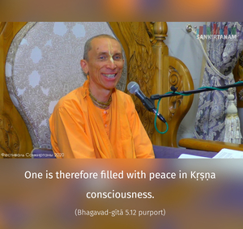

The steadily devoted soul attains unadulterated peace because he offers the result of all activities to Me; whereas a person who is not in union with the Divine, who is greedy for the fruits of his labor, becomes entangled.



The difference between a person in Kṛṣṇa consciousness and a person in bodily consciousness is that the former is attached to Kṛṣṇa whereas the latter is attached to the results of his activities. The person who is attached to Kṛṣṇa and works for Him only is certainly a liberated person, and he has no anxiety over the results of his work. In the Bhāgavatam, the cause of anxiety over the result of an activity is explained as being one’s functioning in the conception of duality, that is, without knowledge of the Absolute Truth. Kṛṣṇa is the Supreme Absolute Truth, the Personality of Godhead. In Kṛṣṇa consciousness, there is no duality. All that exists is a product of Kṛṣṇa’s energy, and Kṛṣṇa is all good. Therefore, activities in Kṛṣṇa consciousness are on the absolute plane; they are transcendental and have no material effect. One is therefore filled with peace in Kṛṣṇa consciousness. But one who is entangled in profit calculation for sense gratification cannot have that peace. This is the secret of Kṛṣṇa consciousness – realization that there is no existence besides Kṛṣṇa is the platform of peace and fearlessness.